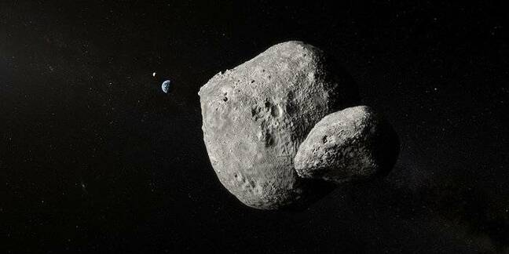
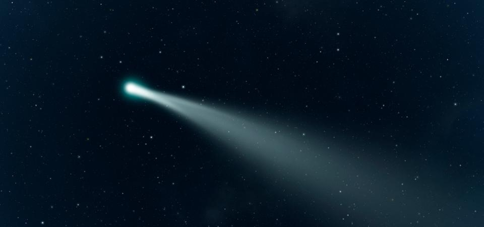

Other Celestial Objects
Besides the 8 planets and the Sun, there are other celestial objects in the solar system. Asteroids, Comets, and Moons all reside in our solar system. Some float about or simply visit to orbit the Sun.
Asteroids, Meteors, and Meteorites
Asteroids, meteors, and meteorites are all the same thing, simply in different positions. Asteroids reside solely in space, orbiting their star or floating aimelessly through space. Meteors are asteroids that have entered the atmosphere of a planet but have not made contanct with the surface of that planet. Meteorites are asteroids that have fallen through the atmosphere of a planet and have in some way landed on the surface of the planet. On Earth, most meteors never reach the surface as they simply burn up in the atmosphere and are seen as shooting stars.

Comets
Comets are balls of ice and dust that have a very elliptical orbit around the Sun. Most comets' orbits stretch past Neptune and also come closer than Venus to the sun. Some comets go farther than even the kyper belt (the edge of the solar system) and some come closer to the Sun than even Mercury. Comets are recognizable by their tails which are made of dust and gas and can be seen by the naked eye if they pass close enough to Earth.

Moons
Moons are celestial bodies smaller than their host planet and always orbit a planet. There are 214 moons in our solar system and planets contain anywhere from 0 to 82 moons. Moons can be larger than dwarf planets, so long as they are smaller than their host planet. Earth is home to the largest moon in comparison to it's size, with a moon ¼ the size of Earth.